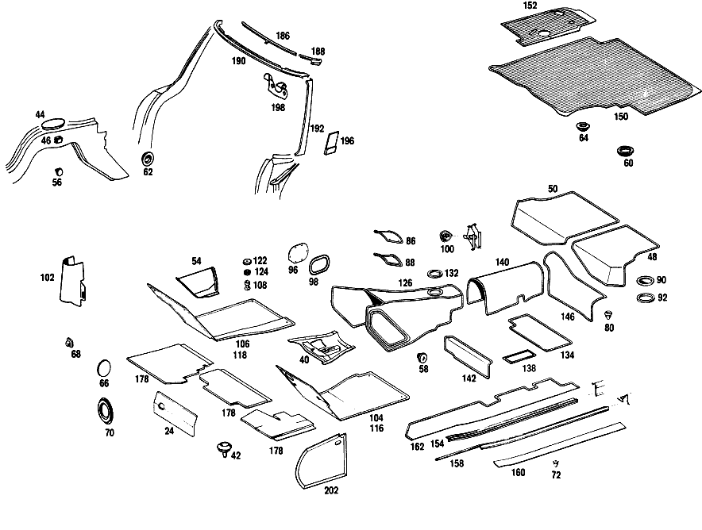

| № | Артикул | Название | Кол. | Примечание | Ограничение |
|---|---|---|---|---|---|
| 24 | A 113 682 00 20 | ИЗОЛЯЦИЯ | - | ||
| 24 | A 000 983 42 91 | ПАПКА | 1 | FIRE WALL, BELOW HEAT EXCHANGER, INSIDE | |
| 40 | A 113 680 01 75 | ПАНЕЛЬ | 1 | TUNNEL, UNDER TRANSMISSION | |
| 42 | A 000 987 03 81 | УПЛОТНИТЕЛЬНЫЙ ШНУР | 1 | ||
| 44 | A 110 683 00 10 | Крышка | 2 | ||
| 46 | A 001 988 44 78 | Скоба | 4 | ||
| 48 | A 113 680 01 03 | НАПОЛЬНОЕ ПОКРЫТИЕ | - | ||
| 48 | A 113 680 11 03 | НАПОЛЬНОЕ ПОКРЫТИЕ | 1 | BOUCLE CARPET, REAR FLOOR [402] БОЛЬШЕ НЕ ПОСТАВЛЯЕТСЯ [008] STATE COLOR AND CHASSIS NUMBER WHEN ORDERING | |
| 50 | A 113 680 02 03 | НАПОЛЬНОЕ ПОКРЫТИЕ | 1 | BOUCLE CARPET, REAR FLOOR [402] БОЛЬШЕ НЕ ПОСТАВЛЯЕТСЯ [008] STATE COLOR AND CHASSIS NUMBER WHEN ORDERING | |
| 54 | A 113 683 00 28 | НАЛКАДКА СКОЛЬЗЯЩАЯ | 1 | SIDE MEMBER IN LEGROOM Рулевое управление: Вправо | |
| 56 | A 000 987 18 40 | Резиновый буфер | 4 | HOLES IN RIGHT WHEELHOUSE Рулевое управление: Вправо | |
| 58 | A 000 990 13 22 | болт | 2 | TO PLUG THREADED HOLE для SAFETY BELT MOUNTING AT CENTER OF TUNNEL | |
| 62 | A 113 987 00 44 | Диск | 6 | IN CROSS MEMBER BELOW SEAT; 20.5 MM | |
| 62 | A 113 987 00 44 | Диск | 3 | IN CROSS MEMBER BELOW AUXILIARY SEAT; 20.5 MM | |
| 64 | A 110 987 05 44 | Запорная шайба | - | 32 MM | |
| 64 | A 000 997 40 20 | Запорная крышка | 2 | IN FOLDING TOP CASE; 30.5 MM | |
| 64 | A 000 997 40 20 | Запорная крышка | 2 | IN FOLDING TOP CASE BOTTOM SIDE PART, для DETENT HOLE; 30.5 MM | |
| 66 | A 113 987 24 44 | Запорная шайба | 1 | TO PLUG HEAT EXCHANGER VALVE MOUNTING HOLE | |
| 68 | A 000 987 04 15 | Пробка | 1 | TO PLUG SQUARE HOLE для WINDSHIELD WIPER CUP IN FIRE WALL Рулевое управление: Вправо | |
| 68 | A 000 987 04 15 | Пробка | 2 | ДЛЯ ЗАКРЫТИЯ ОТВЕРСТИЙ В МОТОРНОМ ЩИТЕ Рулевое управление: Влево | |
| 70 | A 110 987 08 44 | Диск | 1 | TO PLUG WIRELESS SET CABLE PASSAGE HOLE IN FIRE WALL; 18.5 MM Рулевое управление: Вправо | |
| 70 | A 110 987 08 44 | Диск | 2 | TO PLUG THE PAINT RUN\-OFF HOLES IN FRONT PANEL PILLAR; 18.5 MM | |
| 72 | A 111 987 12 15 | ЗАГЛУШКА | - | ||
| 72 | A 000 987 18 40 | Резиновый буфер | 2 | ЗАКРЫТЬ ОТВЕРСТИЯ В ПАНЕЛИ ПОЛА ПОД АВАРИЙНЫМ СИДЕНЬЕМ | |
| 72 | A 000 987 18 40 | Резиновый буфер | 2 | IN OUTSIDE SIDE MEMBER SHELLS | |
| 72 | A 000 987 18 40 | Резиновый буфер | 2 | IN REAR SIDE MEMBERS | |
| 72 | A 000 987 18 40 | Резиновый буфер | 1 | В ПОЛУ СЗАДИ | |
| 72 | A 000 987 18 40 | Резиновый буфер | 2 | IN HEADLAMP SHELLS | |
| 72 | A 000 987 18 40 | Резиновый буфер | 2 | IN TRUNK LID | |
| 72 | A 000 987 18 40 | Резиновый буфер | 1 | PAINT RUN\-OFF HOLE IN REAR FLOOR | |
| 80 | A 110 987 00 39 | Пробка | - | 10mm | |
| 80 | A 000 997 33 20 | Запорная крышка | 2 | ДЛЯ ЗАКРЫТИЯ ОТВЕРСТИЙ; 10 MM | |
| 80 | A 000 997 33 20 | Запорная крышка | 2 | IN TUNNEL; 10 MM | |
| 80 | A 000 997 33 20 | Запорная крышка | 1 | IN HAND BRAKE COVERING; 10 MM | |
| 80 | A 000 997 33 20 | Запорная крышка | 1 | IN CROSS MEMBER ABOVE TOEBOARD; 10 MM | |
| 80 | A 000 997 33 20 | Запорная крышка | 1 | IN WINDSHIELD WIPER CUP; 10 MM | |
| 80 | A 000 997 33 20 | Запорная крышка | 1 | IN DER RESEVERADMULDE; 10 MM | |
| 86 | A 112 683 00 10 | КРЫШКА | 1 | IN TRANSMISSION TUNNEL для MOUNTING HOLE | |
| 88 | A 113 683 00 98 | УПЛОТНИТЕЛЬ | - | ||
| 88 | A 003 989 54 85 | Уплотнительная лента | 1 | ТУННЕЛЬ КП | |
| 90 | A 113 683 01 10 | Крышка | 2 | IMMERSION\-PAINT HOLES | |
| 92 | A 113 997 00 41 | УПЛОТНИТ. КОЛЬЦО | 2 | ||
| 96 | A 113 683 02 10 | КРЫШКА | 1 | AT TUNNEL, для KICK\-DOWN LINKAGE | |
| 98 | A 110 683 02 98 | УПЛОТНИТЕЛЬ | - | ||
| 98 | A 003 989 54 85 | Уплотнительная лента | 1 | ||
| 100 | A 113 899 00 08 | Крышка | 4 | КРЕПЛЕН. ДОМКРАТА | |
| 102 | A 113 687 00 45 | КОЛПАЧОК | 1 | OVER KICK\-DOWN SWITCH Рулевое управление: ВправоАвтоматическая коробка переключения передач | |
| 104 | A 113 684 07 02 | НАСТИЛ | - | Рулевое управление: Влево | |
| 104 | A 113 684 09 02 | НАСТИЛ | 1 | ПОЛ ВОДИТЕЛЯ СЛЕВА Рулевое управление: Влево [008] STATE COLOR AND CHASSIS NUMBER WHEN ORDERING | |
| 104 | A 113 684 09 02 | НАСТИЛ | 1 | ПОЛ ВОДИТЕЛЯ СЛЕВА Рулевое управление: Вправо [008] STATE COLOR AND CHASSIS NUMBER WHEN ORDERING | |
| 106 | A 113 684 08 02 | НАСТИЛ | 1 | ПОЛ ВОДИТЕЛЯ,СПРАВА Рулевое управление: Влево [008] STATE COLOR AND CHASSIS NUMBER WHEN ORDERING | |
| 106 | A 113 684 10 02 | НАСТИЛ | - | Рулевое управление: Вправо | |
| 106 | A 113 684 08 02 | НАСТИЛ | 1 | ПОЛ ВОДИТЕЛЯ,СПРАВА Рулевое управление: Вправо [008] STATE COLOR AND CHASSIS NUMBER WHEN ORDERING | |
| 108 | A 000 988 14 80 | Кнопка | 6 | Рулевое управление: Вправо | |
| 108 | A 000 988 14 80 | Кнопка | 7 | Рулевое управление: Влево | |
| 126 | A 113 680 00 45 | НАСТИЛ | 1 | Рулевое управление: ВлевоКоробка передач [402] БОЛЬШЕ НЕ ПОСТАВЛЯЕТСЯ [008] STATE COLOR AND CHASSIS NUMBER WHEN ORDERING | |
| 132 | A 111 997 10 81 | - КАБ. ВТУЛКА | 1 | ||
| 134 | A 113 680 03 41 | НАСТИЛ | 1 | FLOOR, CENTER LEFT [402] БОЛЬШЕ НЕ ПОСТАВЛЯЕТСЯ [008] STATE COLOR AND CHASSIS NUMBER WHEN ORDERING | |
| 138 | A 113 680 00 41 | НАСТИЛ | 2 | ПОД ВОДИТЕЛЬСКИМ СИДЕНЬЕМ [402] БОЛЬШЕ НЕ ПОСТАВЛЯЕТСЯ [008] STATE COLOR AND CHASSIS NUMBER WHEN ORDERING | |
| 140 | A 113 680 04 45 | НАСТИЛ | 1 | AT CENTER OF TUNNEL [402] БОЛЬШЕ НЕ ПОСТАВЛЯЕТСЯ [008] STATE COLOR AND CHASSIS NUMBER WHEN ORDERING | |
| 142 | A 113 680 01 47 | НАСТИЛ | 1 | CROSS MEMBER BELOW LEFT SEAT [008] STATE COLOR AND CHASSIS NUMBER WHEN ORDERING | |
| 146 | A 113 680 01 46 | НАСТИЛ | 1 | ЗАДН. ПОЛ СЛЕВА [008] STATE COLOR AND CHASSIS NUMBER WHEN ORDERING | |
| 150 | A 113 684 01 04 | РЕЗИНОВЫЙ КОВРИК | 1 | LUGGAGE COMPARTMENT, LEFT | |
| 152 | A 113 684 06 04 | РЕЗИНОВЫЙ КОВРИК | 1 | LUGGAGE COMPARTMENT, RIGHT [010] 044 FROM CHASSIS 005938 EXCEPT FOR, SEE FOOTNOTE 19 [019] WITH LOCK NUMBER UNDEFINED,FOR STORAGE PURPOSES ONLY | |
| 154 | A 113 686 01 36 | Защитная планка | 1 | LEFT BELOW DOORS, AT ROCKER PANELS | |
| 158 | A 113 686 03 36 | Защитная планка | 1 | LEFT CABLE COVERINGS UNDER DOORS TO SIDE MEMBERS | |
| 160 | A 113 686 03 80 | НАСТИЛ | 1 | ВХОД СЛЕВА [008] STATE COLOR AND CHASSIS NUMBER WHEN ORDERING | |
| 162 | A 113 680 01 43 | НАСТИЛ | 1 | ВХОД СЛЕВА [402] БОЛЬШЕ НЕ ПОСТАВЛЯЕТСЯ [008] STATE COLOR AND CHASSIS NUMBER WHEN ORDERING | |
| 178 | A 113 680 03 17 | ПАНЕЛЬ | - | Рулевое управление: ВлевоКоробка передач | |
| 178 | A 113 680 13 17 | ПАНЕЛЬ | - | Рулевое управление: ВлевоКоробка передач | |
| 178 | A 113 680 07 17 | ПАНЕЛЬ | - | Рулевое управление: ВлевоАвтоматическая коробка переключения передач | |
| 178 | A 113 680 15 17 | ПАНЕЛЬ | - | Рулевое управление: ВлевоАвтоматическая коробка переключения передач | |
| 178 | A 113 680 09 17 | ПАНЕЛЬ | - | Рулевое управление: Вправо | |
| 178 | A 113 680 04 17 | ПАНЕЛЬ | - | Рулевое управление: Влево | |
| 178 | A 113 680 06 17 | ПАНЕЛЬ | - | Рулевое управление: Вправо | |
| 178 | A 113 680 20 17 | ПАНЕЛЬ | - | Рулевое управление: ВправоКоробка передач | |
| 178 | A 113 680 10 17 | ПАНЕЛЬ | - | Рулевое управление: ВправоАвтоматическая коробка переключения передач | |
| 178 | A 113 680 18 17 | ПАНЕЛЬ | - | Рулевое управление: ВправоАвтоматическая коробка переключения передач | |
| 178 | A 113 680 05 17 | ПАНЕЛЬ | - | Рулевое управление: Влево | |
| 178 | A 113 680 08 17 | ПАНЕЛЬ | - | Рулевое управление: Вправо | |
| 178 | A 000 983 22 91 | ПАПКА | 1 | 800 X 1200 MM COVERING BELOW INSTRUMENT PANEL [404] ЗАКАЗЫВАТЬ ПОГОННЫМИ МЕТРАМИ [008] STATE COLOR AND CHASSIS NUMBER WHEN ORDERING | |
| 186 | A 113 688 00 39 | Обшивка | 1 | INSIDE CENTRAL, TOP CROSS | |
| 188 | A 113 688 01 39 | Обшивка | 1 | INSIDE LEFT, TOP CROSS | |
| 190 | A 113 688 00 40 | Обшивка | 1 | OUTSIDE, TOP CROSS | |
| 192 | A 113 688 01 41 | Обшивка | 1 | LATERAL OUTSIDE LEFT | |
| 196 | A 113 725 01 97 | ПОДКЛАДКА | 1 | UNDER WINDSHIELD COVERING, LEFT | |
| 198 | A 113 688 03 39 | Обшивка | 2 | QUIDE BEARINGS | |
| 202 | A 113 680 01 80 | Обшивка | 1 | BODY FRONT END, LATERAL BOTTOM LEFT [008] STATE COLOR AND CHASSIS NUMBER WHEN ORDERING | |
| 224 | A 113 680 05 98 | КРЫШКА ВЕЩ. ЯЩИКА | 1 | Рулевое управление: Влево | |
| 224 | A 113 680 06 98 | КРЫШКА ВЕЩ. ЯЩИКА | 1 | Рулевое управление: Вправо | |
| 226 | A 113 680 00 71 | МОЛДИНГ | 1 | Рулевое управление: Влево | |
| 226 | A 113 680 04 71 | МОЛДИНГ | - | Рулевое управление: Вправо | |
| 226 | A 113 680 00 71 | МОЛДИНГ | 1 | Рулевое управление: Вправо | |
| 228 | A 113 689 03 70 | РУЧКА | 1 | Рулевое управление: Влево | |
| 228 | A 113 689 04 70 | РУЧКА | 1 | Рулевое управление: Вправо | |
| 230 | A 113 689 00 51 | ПАЛЕЦ ШАРНИРА | 1 | Рулевое управление: Влево | |
| 230 | A 113 689 02 51 | ПАЛЕЦ ШАРНИРА | 1 | Рулевое управление: Вправо | |
| 234 | A 000 994 04 45 | ПРЕДОХРАНИТЕЛЬ | - | ||
| 234 | A 000 994 33 45 | предохранитель | - | ||
| 234 | A 140 994 10 45 | предохранитель | 4 | ПЕТЛЯ НА КРЫШКЕ ВЕЩ.ЯЩИКА | |
| 236 | A 110 987 04 39 | РЕЗИНОВЫЙ УПОР | - | ||
| 236 | A 110 987 05 39 | Резиновое крепление | 2 | ||
| 238 | H 10 186 689 00 33 | НАПРАВЛЯЮЩАЯ | 2 | ||
| 240 | A 186 993 20 01 | ПРУЖИНА | 1 | ||
| 244 | A 000 766 10 06 | - Ключ | 2 | MARKED с THE LETTER "K" STATE LETTER AND NUMBER OF LOCK WHEN ORDERING [402] БОЛЬШЕ НЕ ПОСТАВЛЯЕТСЯ [407] ПРИ ЗАКАЗЕ УКАЗАТЬ НОМЕР КОМПЛЕКТА ЗАМКОВ | |
| 250 | A 000 994 04 45 | ПРЕДОХРАНИТЕЛЬ | - | ||
| 250 | A 000 994 33 45 | предохранитель | - | ||
| 250 | A 140 994 10 45 | предохранитель | 2 | GLOVE COMPARTMENT с LID TO INSTRUMENT PANEL | |
| 252 | A 000 994 23 45 | предохранитель | 4 | GLOVE COMPARTMENT с LID TO INSTRUMENT PANEL; B4.2 S=1.25\-2.0 | |
| 254 | A 113 680 21 06 | Обшивка | 1 | Рулевое управление: Влево [008] STATE COLOR AND CHASSIS NUMBER WHEN ORDERING | |
| 260 | A 113 680 17 06 | Обшивка | 1 | BOTTOM LEFT INSTRUMENT PANEL Рулевое управление: Влево [008] STATE COLOR AND CHASSIS NUMBER WHEN ORDERING | |
| 262 | A 113 680 18 06 | Обшивка | 1 | BOTTOM RIGHT INSTRUMENT PANEL Рулевое управление: Влево [008] STATE COLOR AND CHASSIS NUMBER WHEN ORDERING | |
| 272 | A 113 680 25 06 | Обшивка | 1 | CENTRAL INSTRUMENT PANEL Рулевое управление: Влево [008] STATE COLOR AND CHASSIS NUMBER WHEN ORDERING | |
| 278 | A 113 689 03 80 | - РОЗЕТКА | 1 | COURTESY LAMP INSTRUMENT PANEL | |
| 280 | A 113 680 01 06 | Обшивка | 1 | TOP LEFT INSTRUMENT PANEL Рулевое управление: Влево [008] STATE COLOR AND CHASSIS NUMBER WHEN ORDERING | |
| 280 | A 113 680 05 06 | Обшивка | 1 | TOP LEFT INSTRUMENT PANEL Рулевое управление: Вправо [008] STATE COLOR AND CHASSIS NUMBER WHEN ORDERING | |
| 282 | A 113 680 02 06 | Обшивка | 1 | TOP RIGHT INSTRUMENT PANEL Рулевое управление: Влево [008] STATE COLOR AND CHASSIS NUMBER WHEN ORDERING | |
| 282 | A 113 680 06 06 | Обшивка | 1 | TOP RIGHT INSTRUMENT PANEL Рулевое управление: Вправо [008] STATE COLOR AND CHASSIS NUMBER WHEN ORDERING | |
| 306 | A 113 680 03 79 | КОРПУС | 1 | Рулевое управление: Влево [008] STATE COLOR AND CHASSIS NUMBER WHEN ORDERING | |
| 306 | A 113 680 04 79 | КОРПУС | 1 | Рулевое управление: Вправо [008] STATE COLOR AND CHASSIS NUMBER WHEN ORDERING | |
| 306 | A 113 680 11 79 | КОРПУС | 1 | Рулевое управление: Влево | |
| 306 | A 113 680 12 79 | КОРПУС | 1 | Рулевое управление: Вправо | |
| 310 | A 113 689 07 71 | МОЛДИНГ | 1 | Рулевое управление: Влево | |
| 310 | A 113 689 08 71 | МОЛДИНГ | - | Рулевое управление: Вправо | |
| 310 | A 113 689 07 71 | МОЛДИНГ | 1 | Рулевое управление: Вправо | |
| 318 | A 113 680 02 17 | ПАНЕЛЬ | - | ||
| 318 | A 113 680 11 17 | ПАНЕЛЬ | - | ||
| 318 | A 113 680 12 17 | ПАНЕЛЬ | 1 | [018] ENCLOSE SAMPLE WHEN ORDERING | |
| 320 | A 111 680 50 67 | КОНЦЕВОЙ ЭЛЕМЕНТ | 1 | ||
| 322 | A 000 987 94 40 | Резиновый буфер | 2 | ПАНЕЛЬ К ПЕРЕДНЕЙ ПАНЕЛИ | |
| 324 | A 113 689 03 39 | КРЫШКА | 1 | СЕРЕДИНА | |
| 326 | A 113 817 01 14 | ОБОЗНАЧЕНИЕ МОДЕЛИ | 1 | "250 SL" | |
| 330 | A 111 994 03 45 | ПРЕДОХРАНИТЕЛЬ | 2 | TYPE DESIGNATION AND COVER TO INSTRUMENT PANEL | |
| 330 | A 108 994 01 45 | ПРЕДОХРАНИТЕЛЬ | 2 | ||
| 334 | A 113 680 01 11 | ПЛАСТИНА | 1 | СЛЕВА Рулевое управление: Влево [008] STATE COLOR AND CHASSIS NUMBER WHEN ORDERING | |
| 334 | A 113 680 03 11 | ПЛАСТИНА | 1 | СЛЕВА Рулевое управление: Вправо [008] STATE COLOR AND CHASSIS NUMBER WHEN ORDERING | |
| 336 | A 113 680 02 11 | ПЛАСТИНА | 1 | СПРАВА Рулевое управление: Влево [008] STATE COLOR AND CHASSIS NUMBER WHEN ORDERING | |
| 338 | A 113 680 01 64 | РАМА | 2 | ||
| 340 | A 113 689 00 56 | КОЛЬЦО | 2 | ||
| 342 | A 113 689 01 56 | КОЛЬЦО | 2 | ||
| 344 | A 001 988 90 78 | СКОБА | 4 | ||
| 346 | A 113 680 21 71 | МОЛДИНГ | 1 | LEFT BOTTOM INSTRUMENT PANEL Рулевое управление: Влево | |
| 346 | A 113 680 22 71 | МОЛДИНГ | 1 | RIGHT BOTTOM INSTRUMENT PANEL Рулевое управление: Вправо | |
| 350 | A 113 680 23 71 | МОЛДИНГ | 1 | CENTRAL BOTTOM INSTRUMENT PANEL Рулевое управление: Влево | |
| 350 | A 113 680 24 71 | МОЛДИНГ | 1 | CENTRAL BOTTOM INSTRUMENT PANEL Рулевое управление: Вправо | |
| 352 | A 113 680 02 71 | МОЛДИНГ | 1 | BOTTOM, AT INSTRUMENT PANEL, RIGHT Рулевое управление: Влево | |
| 356 | A 110 689 01 80 | Декоративная розетка | 1 | STEERING LOCK OPENING | |
| 358 | A 110 689 00 98 | Резиновое кольцо | 1 | ||
| A 000 983 22 92 | ГРИБОК | 1 | ПОЛ ВОДИТЕЛЯ СЛЕВА 392X565 MM | ||
| A 000 983 22 92 | ГРИБОК | 1 | ПОЛ ВОДИТЕЛЯ,СПРАВА 346X565 MM | ||
| A 000 983 29 91 | ПАПКА | 2 | CROSS MEMBER BELOW SEATS 350 X 50 MM 350X50 MM | ||
| A 000 983 29 91 | ПАПКА | 1 | ПОЛ ВОДИТЕЛЯ СЛЕВА | ||
| A 000 983 29 91 | ПАПКА | 1 | TRANSMISSION TUNNEL, TOP REAR, 158 X 205 MM 158X205 MM | ||
| A 000 983 29 91 | ПАПКА | 1 | TUNNEL, FRONT LEFT, 350 X 789 MM | ||
| A 000 983 29 91 | ПАПКА | 1 | TUNNEL, FRONT RIGHT, 325 X 787 MM | ||
| A 000 983 29 91 | ПАПКА | 1 | TUNNEL, CENTRAL, 490 X 608 MM | ||
| A 000 983 29 91 | ПАПКА | 1 | ПОЛ ВОДИТЕЛЯ СЛЕВА 521X566 MM | ||
| A 000 983 29 91 | ПАПКА | 1 | ПОЛ ВОДИТЕЛЯ,СПРАВА 523X602 MM | ||
| A 000 983 29 91 | ПАПКА | 1 | FLOOR, CENTRAL LEFT, 474 X 537 MM | ||
| A 000 983 29 91 | ПАПКА | 1 | FLOOR, CENTRAL RIGHT, 474 X 537 MM | ||
| A 000 983 29 91 | ПАПКА | 5 | BEADS IN FOLDING TOP CASE, 11 X 210 MM | ||
| A 113 682 06 28 | ШУМОИЗОЛЯЦИЯ | - | |||
| A 113 682 21 28 | ШУМОИЗОЛЯЦИЯ | - | Рулевое управление: Влево | ||
| A 113 682 22 28 | ШУМОИЗОЛЯЦИЯ | - | Рулевое управление: Влево | ||
| A 113 682 08 28 | ШУМОИЗОЛЯЦИЯ | - | Рулевое управление: Влево | ||
| A 113 682 15 28 | ШУМОИЗОЛЯЦИЯ | - | Рулевое управление: Вправо | ||
| A 113 682 14 28 | ШУМОИЗОЛЯЦИЯ | - | Рулевое управление: Влево | ||
| A 113 682 16 28 | ШУМОИЗОЛЯЦИЯ | - | Рулевое управление: Вправо | ||
| A 113 682 11 28 | ШУМОИЗОЛЯЦИЯ | - | Рулевое управление: Вправо | ||
| A 000 983 42 91 | ПАПКА | 1 | FIRE WALL, TOP FRONT Рулевое управление: Вправо | ||
| A 113 682 07 28 | ШУМОИЗОЛЯЦИЯ | - | Рулевое управление: ВлевоКоробка передач | ||
| A 113 682 17 28 | ШУМОИЗОЛЯЦИЯ | - | Рулевое управление: Вправо | ||
| A 113 682 13 28 | ШУМОИЗОЛЯЦИЯ | - | Рулевое управление: ВлевоАвтоматическая коробка переключения передач | ||
| A 113 682 12 28 | ШУМОИЗОЛЯЦИЯ | - | Рулевое управление: Влево | ||
| A 113 682 18 28 | ШУМОИЗОЛЯЦИЯ | - | Рулевое управление: ВправоКоробка передач | ||
| A 113 682 19 28 | ШУМОИЗОЛЯЦИЯ | - | Рулевое управление: ВправоАвтоматическая коробка переключения передач | ||
| A 000 983 42 91 | ПАПКА | 1 | Рулевое управление: Влево | ||
| A 000 983 42 91 | ПАПКА | 1 | Рулевое управление: Влево | ||
| A 000 983 42 91 | ПАПКА | 1 | |||
| A 000 983 42 91 | ПАПКА | 1 | |||
| A 000 983 42 91 | ПАПКА | 1 | |||
| A 000 983 42 91 | ПАПКА | 1 | |||
| A 000 983 30 91 | ПАПКА | - | |||
| A 000 983 29 91 | ПАПКА | 2 | LUGGAGE COMPARTMENT,LATERAL 85 X 570 MM | ||
| A 000 983 29 91 | ПАПКА | 1 | LUGGAGE COMPARTMENT,CENTER 192X595 MM | ||
| A 000 983 03 92 | ГРИБОК | - | [415] ПРИМЕЧ. ПО ЗАМЕНЕ ПРИМЕНИМО ТОЛЬКО ДЛЯ СТОЯЩИХ РЯДОМ ПОЗИЦИЙ | ||
| A 113 758 00 97 | ПРОКЛАДКА | 1 | 6 MM REAR LID 300 X 160 MM [404] ЗАКАЗЫВАТЬ ПОГОННЫМИ МЕТРАМИ | ||
| A 113 680 00 75 | ПАНЕЛЬ | - | |||
| N 000933 010089 | Винт | - | |||
| N 000933 010128 | Винт | 12 | TUNNEL STRIKER PLATE TO TUNNEL | ||
| N 000127 010202 | Пружинное кольцо | - | |||
| N 912004 010102 | Пружинное кольцо | 12 | TUNNEL STRIKER PLATE TO TUNNEL | ||
| N 000125 010500 | ШАЙБА | 2 | |||
| N 000464 006000 | Винт | 2 | COVERING TO CROSS MEMBER BELOW AUXILIARY SEAT | ||
| N 009021 006104 | Шайба | - | |||
| N 009021 006205 | Шайба | - | |||
| N 009021 006208 | Шайба | 2 | COVERING TO CROSS MEMBER BELOW AUXILIARY SEAT; 6 MM | ||
| N 007981 003241 | Шуруп | - | |||
| N 007981 003246 | Шуруп | 3 | SLIDING PLATE TO SIDE MEMBER Рулевое управление: Вправо | ||
| N 007513 005109 | Саморез | 4 | COVER AND SEAL TO TRANSMISSION TUNNEL | ||
| N 007981 004243 | Шуруп | - | |||
| N 000000 002062 | Шуруп | 6 | COVER AND SEAL WASHER TO REAR FLOOR | ||
| A 000 989 51 20 | ГЕРМЕТИЗИРУЮЩИЙ СОСТАВ | - | |||
| A 001 989 33 20 | ГЕРМЕТИЗИРУЮЩИЙ СОСТАВ | NB | COVER TO REAR FLOOR | ||
| N 007981 004219 | Шуруп | - | |||
| N 007981 004244 | Шуруп | - | |||
| N 000000 000453 | Шуруп | 6 | КРЫШКА НА ТУННЕЛЕ; MBN 10169 4.2 X 13 | ||
| N 007983 004267 | Шуруп | 6 | Рулевое управление: Вправо | ||
| N 007983 004267 | Шуруп | 7 | Рулевое управление: Влево | ||
| A 113 680 09 45 | НАСТИЛ | 1 | Рулевое управление: ВлевоАвтоматическая коробка переключения передач [402] БОЛЬШЕ НЕ ПОСТАВЛЯЕТСЯ [008] STATE COLOR AND CHASSIS NUMBER WHEN ORDERING | ||
| A 113 680 05 45 | НАСТИЛ | 1 | Рулевое управление: ВправоКоробка передач [008] STATE COLOR AND CHASSIS NUMBER WHEN ORDERING | ||
| A 113 680 10 45 | НАСТИЛ | 1 | Рулевое управление: ВправоАвтоматическая коробка переключения передач [008] STATE COLOR AND CHASSIS NUMBER WHEN ORDERING | ||
| A 113 680 04 41 | НАСТИЛ | 1 | FLOOR, CENTER RIGHT [402] БОЛЬШЕ НЕ ПОСТАВЛЯЕТСЯ [008] STATE COLOR AND CHASSIS NUMBER WHEN ORDERING | ||
| A 113 680 02 47 | НАСТИЛ | 1 | ТРАВЕРСА ПОД СИДЕНЬЕМ ВОДИТЕЛЯ, СПРАВА [008] STATE COLOR AND CHASSIS NUMBER WHEN ORDERING | ||
| A 113 680 02 46 | НАСТИЛ | 1 | RIGHT REAR FLOOR [008] STATE COLOR AND CHASSIS NUMBER WHEN ORDERING | ||
| A 113 684 04 04 | РЕЗИНОВЫЙ КОВРИК | - | |||
| A 113 686 02 36 | Защитная планка | 1 | RIGHT BELOW DOORS, AT ROCKER PANELS | ||
| N 007982 002211 | Шуруп | - | |||
| N 007982 002212 | Шуруп | 14 | COVER RAILS TO ROCKER PANELS | ||
| N 009021 004103 | Шайба | - | |||
| N 009021 004108 | Шайба | - | |||
| A 094 990 63 08 | Шайба | 10 | COVER RAILS TO ROCKER PANELS | ||
| A 113 686 04 36 | Защитная планка | 1 | RIGHT CABLE COVERINGS UNDER DOORS TO SIDE MEMBERS | ||
| N 007982 002211 | Шуруп | - | |||
| N 007982 002212 | Шуруп | 16 | COVER RAILS TO SIDE MEMBERS | ||
| A 113 686 04 80 | НАСТИЛ | 1 | ВХОД СПРАВА [008] STATE COLOR AND CHASSIS NUMBER WHEN ORDERING | ||
| A 113 680 02 43 | НАСТИЛ | 1 | ВХОД СПРАВА [008] STATE COLOR AND CHASSIS NUMBER WHEN ORDERING | ||
| A 000 987 91 35 | РЕЗИН. ПРОФИЛЬ | - | |||
| A 000 987 50 70 | резиновый профиль | 3 | BODY FRONT END, REAR TOP 50 MM [404] ЗАКАЗЫВАТЬ ПОГОННЫМИ МЕТРАМИ | ||
| A 000 983 01 98 | ПОРОЛОН | - | |||
| A 000 983 35 98 | ПОРОЛОН | 1 | 1000 X 1000 MM COVERING BELOW INSTRUMENT PANEL [404] ЗАКАЗЫВАТЬ ПОГОННЫМИ МЕТРАМИ [008] STATE COLOR AND CHASSIS NUMBER WHEN ORDERING | ||
| A 000 983 87 86 | ИСКУССТВ. КОЖА | - | |||
| A 001 983 29 86 | ИСКУССТВ. КОЖА | 3 | для INSTRUMENT PANEL, CENTER, LEFT AND RIGHT [404] ЗАКАЗЫВАТЬ ПОГОННЫМИ МЕТРАМИ [402] БОЛЬШЕ НЕ ПОСТАВЛЯЕТСЯ [008] STATE COLOR AND CHASSIS NUMBER WHEN ORDERING | ||
| N 007981 003227 | Шуруп | - | |||
| N 007981 003207 | Шуруп | 7 | ПАНЕЛЬ К ПЕРЕДНЕЙ ПАНЕЛИ | ||
| N 009021 003105 | Шайба | 7 | ПАНЕЛЬ К ПЕРЕДНЕЙ ПАНЕЛИ | ||
| A 000 988 23 78 | Скоба | 2 | |||
| N 007983 004236 | Шуруп | 2 | КОЖУХ НА ПЕРЕГОРОДКЕ | ||
| A 112 990 00 42 | ШАЙБА | - | |||
| A 301 990 00 42 | Диск | 2 | КОЖУХ НА ПЕРЕГОРОДКЕ | ||
| A 113 688 02 39 | Обшивка | 1 | INSIDE RIGHT, TOP CROSS | ||
| A 113 688 02 41 | Обшивка | 1 | LATERAL OUTSIDE RIGHT | ||
| N 007981 003257 | Шуруп | 4 | WINDSHIELD INSIDE COVERING TO FRONT PANEL FRAME [003] 011966, 011969, 011973, 011976, 011988, 011990- 011994, 012001- 012003, 012006- 012008, 012014, 012015, 012017, 012019, 012023, 012025- 012028, 012039, 012040, 012043, 012044, 012050- 012054, 012058- 012065, 012069, 012072- 012084. | ||
| A 113 725 02 97 | ПОДКЛАДКА | 1 | UNDER WINDSHIELD COVERING, RIGHT | ||
| N 007982 002227 | Шуруп | - | |||
| N 007982 002212 | Шуруп | 14 | WINDSHIELD OUTSIDE COVERING TO FRONT PANEL FRAME | ||
| A 000 983 00 98 | ПОРОЛОН | - | |||
| A 000 983 87 86 | ИСКУССТВ. КОЖА | - | |||
| A 001 983 29 86 | ИСКУССТВ. КОЖА | 1 | 100 X 1200 MM FRONT PANEL FRAME, TOP [404] ЗАКАЗЫВАТЬ ПОГОННЫМИ МЕТРАМИ [402] БОЛЬШЕ НЕ ПОСТАВЛЯЕТСЯ [008] STATE COLOR AND CHASSIS NUMBER WHEN ORDERING | ||
| A 113 680 02 80 | Обшивка | 1 | BODY FRONT END, LATERAL BOTTOM RIGHT [008] STATE COLOR AND CHASSIS NUMBER WHEN ORDERING | ||
| A 113 680 07 81 | Обшивка | 1 | TOP CROSS LEFT [008] STATE COLOR AND CHASSIS NUMBER WHEN ORDERING | ||
| A 113 680 08 81 | Обшивка | 1 | TOP CROSS RIGHT [008] STATE COLOR AND CHASSIS NUMBER WHEN ORDERING | ||
| A 113 680 05 81 | Обшивка | 1 | СБОКУ СЛЕВА [008] STATE COLOR AND CHASSIS NUMBER WHEN ORDERING | ||
| A 113 680 06 81 | Обшивка | 1 | СБОКУ СПРАВА [008] STATE COLOR AND CHASSIS NUMBER WHEN ORDERING | ||
| N 007981 003274 | Шуруп | 4 | |||
| A 113 680 03 91 | ВЕЩЕВОЙ ЯЩИК | - | Рулевое управление: Влево | ||
| A 113 680 04 91 | ВЕЩЕВОЙ ЯЩИК | - | Рулевое управление: Вправо | ||
| A 000 983 87 86 | ИСКУССТВ. КОЖА | - | |||
| A 001 983 29 86 | ИСКУССТВ. КОЖА | 1 | GLOVE COMPARTMENT, TOP [404] ЗАКАЗЫВАТЬ ПОГОННЫМИ МЕТРАМИ [402] БОЛЬШЕ НЕ ПОСТАВЛЯЕТСЯ [008] STATE COLOR AND CHASSIS NUMBER WHEN ORDERING | ||
| A 000 983 52 91 | ПАПКА | 1 | 2 MM GLOVE COMPARTMENT BOTTOM 135 X 287 MM [404] ЗАКАЗЫВАТЬ ПОГОННЫМИ МЕТРАМИ | ||
| A 000 983 87 86 | ИСКУССТВ. КОЖА | - | |||
| A 001 983 29 86 | ИСКУССТВ. КОЖА | 1 | GLOVE COMPARTMENT BOTTOM 165 X 315 MM [404] ЗАКАЗЫВАТЬ ПОГОННЫМИ МЕТРАМИ [402] БОЛЬШЕ НЕ ПОСТАВЛЯЕТСЯ [008] STATE COLOR AND CHASSIS NUMBER WHEN ORDERING | ||
| A 000 983 38 10 | Полоски | NB | [404] ЗАКАЗЫВАТЬ ПОГОННЫМИ МЕТРАМИ [402] БОЛЬШЕ НЕ ПОСТАВЛЯЕТСЯ | ||
| N 007988 004103 | БОЛТ | 2 | РУЧКА К КРЫШКЕ ВЕЩЕВОГО ОТСЕКА | ||
| N 007331 004209 | Заклепка | 2 | |||
| N 007981 004325 | Шуруп | 4 | ПЕТЛЯ НА КРЫШКЕ ВЕЩ.ЯЩИКА | ||
| A 110 689 00 01 | Замок | 1 | SAME LOCK AS REAR LID LOCK STATE LETTER AND NUMBER OF LOCK WHEN ORDERING [407] ПРИ ЗАКАЗЕ УКАЗАТЬ НОМЕР КОМПЛЕКТА ЗАМКОВ | ||
| A 000 766 20 06 | Ключ | 1 | BLANK; REAR LID AND GLOVE COMPARTMENT, STATE LETTER OF KEY BITTING WHEN ORDERING [402] БОЛЬШЕ НЕ ПОСТАВЛЯЕТСЯ [407] ПРИ ЗАКАЗЕ УКАЗАТЬ НОМЕР КОМПЛЕКТА ЗАМКОВ | ||
| N 007981 004318 | Шуруп | 4 | GLOVE COMPARTMENT с LID TO INSTRUMENT PANEL; 4,2X9,5 | ||
| N 007982 003209 | Шуруп | 2 | GLOVE COMPARTMENT с LID TO INSTRUMENT PANEL | ||
| N 007981 004325 | Шуруп | 2 | GLOVE COMPARTMENT с LID TO INSTRUMENT PANEL | ||
| A 000 985 10 62 | Диск | 2 | GLOVE COMPARTMENT с LID TO INSTRUMENT PANEL | ||
| A 113 680 22 06 | Обшивка | 1 | Рулевое управление: Вправо [008] STATE COLOR AND CHASSIS NUMBER WHEN ORDERING | ||
| A 113 680 47 06 | Обшивка | 1 | Рулевое управление: Влево | ||
| A 113 680 48 06 | Обшивка | 1 | Рулевое управление: Вправо | ||
| A 113 680 19 06 | Обшивка | 1 | BOTTOM LEFT INSTRUMENT PANEL Рулевое управление: Вправо [008] STATE COLOR AND CHASSIS NUMBER WHEN ORDERING | ||
| A 113 680 20 06 | Обшивка | 1 | BOTTOM RIGHT INSTRUMENT PANEL Рулевое управление: Вправо [008] STATE COLOR AND CHASSIS NUMBER WHEN ORDERING | ||
| A 113 680 69 06 | Обшивка | 1 | BOTTOM LEFT INSTRUMENT PANEL Рулевое управление: Влево | ||
| A 113 680 74 06 | Обшивка | 1 | BOTTOM LEFT INSTRUMENT PANEL Рулевое управление: Вправо | ||
| A 113 680 73 06 | Обшивка | 1 | BOTTOM RIGHT INSTRUMENT PANEL Рулевое управление: Влево | ||
| A 113 680 70 06 | Обшивка | 1 | BOTTOM RIGHT INSTRUMENT PANEL Рулевое управление: Вправо | ||
| A 113 680 26 06 | Обшивка | 1 | CENTRAL INSTRUMENT PANEL Рулевое управление: Вправо [008] STATE COLOR AND CHASSIS NUMBER WHEN ORDERING | ||
| A 113 680 71 06 | Обшивка | 1 | CENTRAL INSTRUMENT PANEL Рулевое управление: Влево | ||
| A 113 680 72 06 | Обшивка | 1 | CENTRAL INSTRUMENT PANEL Рулевое управление: Вправо | ||
| A 113 689 00 80 | - РОЗЕТКА | - | [415] ПРИМЕЧ. ПО ЗАМЕНЕ ПРИМЕНИМО ТОЛЬКО ДЛЯ СТОЯЩИХ РЯДОМ ПОЗИЦИЙ | ||
| A 113 680 57 06 | Обшивка | 1 | TOP LEFT INSTRUMENT PANEL Рулевое управление: Влево | ||
| A 113 680 60 06 | Обшивка | 1 | TOP LEFT INSTRUMENT PANEL Рулевое управление: Вправо | ||
| A 113 680 59 06 | Обшивка | 1 | TOP RIGHT INSTRUMENT PANEL Рулевое управление: Влево | ||
| A 113 680 58 06 | Обшивка | 1 | TOP RIGHT INSTRUMENT PANEL Рулевое управление: Вправо | ||
| N 007981 004325 | Шуруп | 8 | BOTTOM PAD TO INSTRUMENT PANEL | ||
| N 007983 004338 | САМОРЕЗ | 8 | BOTTOM PAD TO INSTRUMENT PANEL | ||
| N 900056 004507 | ПОТАЙНАЯ ШАЙБА | 8 | BOTTOM PAD TO INSTRUMENT PANEL | ||
| N 007983 004245 | Шуруп | 4 | BOTTOM PAD TO INSTRUMENT PANEL | ||
| N 900056 004507 | ПОТАЙНАЯ ШАЙБА | 4 | BOTTOM PAD TO INSTRUMENT PANEL | ||
| N 007981 004239 | САМОРЕЗ | - | |||
| N 007981 004325 | Шуруп | 2 | TOP PAD TO INSTRUMENT PANEL | ||
| N 007983 004245 | Шуруп | 2 | TOP PAD TO INSTRUMENT PANEL | ||
| A 000 994 04 45 | ПРЕДОХРАНИТЕЛЬ | - | |||
| A 000 994 33 45 | предохранитель | - | |||
| A 140 994 10 45 | предохранитель | 2 | TOP PAD TO INSTRUMENT PANEL | ||
| N 007983 004245 | Шуруп | 2 | |||
| N 007982 004227 | Шуруп | - | B4,2X13 | ||
| N 007982 004203 | Шуруп | 4 | TOP PAD TO INSTRUMENT PANEL; 4.2X13 | ||
| N 007982 002222 | Шуруп | 4 | GARNISH MOULDING TO INSTRUMENT CLUSTER CAP | ||
| N 007981 004219 | Шуруп | - | |||
| N 007981 004244 | Шуруп | - | |||
| N 000000 000453 | Шуруп | 2 | CAP TO INSTRUMENT CLUSTER; MBN 10169 4.2 X 13 | ||
| N 009021 004103 | Шайба | - | |||
| N 009021 004108 | Шайба | - | |||
| A 094 990 63 08 | Шайба | 2 | CAP TO INSTRUMENT CLUSTER | ||
| A 000 994 04 45 | ПРЕДОХРАНИТЕЛЬ | - | |||
| A 000 994 33 45 | предохранитель | - | |||
| A 140 994 10 45 | предохранитель | 2 | CAP TO INSTRUMENT CLUSTER | ||
| A 000 994 42 45 | ПРЕДОХРАНИТЕЛЬ | - | |||
| A 001 994 54 45 | Пружинная гайка | 2 | ПАНЕЛЬ К ПЕРЕДНЕЙ ПАНЕЛИ | ||
| N 007983 002232 | Шуруп | 2 | ПАНЕЛЬ К ПЕРЕДНЕЙ ПАНЕЛИ | ||
| A 113 689 04 39 | КРЫШКА | 1 | СЕРЕДИНА | ||
| N 007981 004313 | Шуруп | 2 | CENTRAL COVER TO INSTRUMENT PANEL | ||
| A 000 994 18 45 | ПРЕДОХРАНИТЕЛЬ | 2 | CENTRAL COVER TO INSTRUMENT PANEL | ||
| A 113 680 04 11 | ПЛАСТИНА | 1 | СПРАВА Рулевое управление: Вправо [008] STATE COLOR AND CHASSIS NUMBER WHEN ORDERING | ||
| A 113 680 07 71 | МОЛДИНГ | 1 | LEFT BOTTOM INSTRUMENT PANEL Рулевое управление: Влево | ||
| A 113 680 10 71 | МОЛДИНГ | 1 | RIGHT BOTTOM INSTRUMENT PANEL Рулевое управление: Вправо | ||
| A 113 680 09 71 | МОЛДИНГ | 1 | CENTRAL BOTTOM INSTRUMENT PANEL Рулевое управление: Влево | ||
| A 113 680 08 71 | МОЛДИНГ | - | Рулевое управление: Вправо | ||
| A 113 680 24 71 | МОЛДИНГ | 1 | CENTRAL BOTTOM INSTRUMENT PANEL Рулевое управление: Вправо | ||
| A 113 680 11 71 | МОЛДИНГ | 1 | BOTTOM, AT INSTRUMENT PANEL, LEFT Рулевое управление: Вправо | ||
| A 000 983 38 10 | Полоски | NB | [404] ЗАКАЗЫВАТЬ ПОГОННЫМИ МЕТРАМИ [402] БОЛЬШЕ НЕ ПОСТАВЛЯЕТСЯ | ||
| N 007981 002217 | Шуруп | - | |||
| N 007981 002218 | Шуруп | 7 | BOTTOM GARNISH MOULDINGS TO INSTRUMENT PANEL | ||
| A 115 689 00 80 | Декоративная розетка | 1 | STEERING LOCK OPENING | ||
| A 115 689 00 97 | Резиновое кольцо | 1 | |||
| A 115 689 00 97 | Резиновое кольцо | 1 | LUGGAGE COMPARTMENT,CENTER 192 X 595 MM |
Позиций: 332 · подписано на схемах: 148 · колесо — плавный зум в курсор, перетаскивание — пан, двойной клик — зум, клик по артикулу — скопировать.